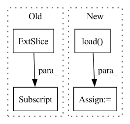

Pattern ID :11493
Before Change
import matplotlib.pyplot as plt
for i in range(100):
plt.plot(xs[i, 1:, 0], xs[i, 1:, 1] )
plt.show()
return xs, usAfter Change
with open(path+"xs.pkl", "rb") as f:
xs = pickle.load(f)
with open(path+"us.pkl", "rb") as f:
us = pickle.load( f)
elif system == "quadrotor":
import pandas as pdIn pattern: SUPERPATTERN
Frequency: 3
Non-data size: 4
Instances Fragment ID: 39167412
Project Name: mit-acl/nn_robustness_analysis
Commit Name: c9b51e13d331027e4154999bc43026a9daf05ae0
Time: 2021-11-09
Author: mfe@mit.edu
File Name: nn_closed_loop/nn_closed_loop/utils/nn.py
M Class Name: AnonimousClass
N Class Name: AnonimousClass
M Method Name: load_data(1)
N Method Name: load_data(0)
M Parent Class:
N Parent Class:
M File Name: nn_closed_loop/nn_closed_loop/utils/nn.py
N File Name: nn_closed_loop/nn_closed_loop/utils/nn.py
M Start Line: 91
M End Line: 113
N Start Line: 96
N End Line: 126
Before Change
wandb.log({"train/loss": loss.item()})
if (i+1) % args.sample_freq == 0:
model.eval()
dec = decoder.generate(torch.LongTensor([args.bos_token]*len(encoded[:args.test_samples]))[:, None] .to(device), args.max_seq_len,
eos_token=args.pad_token, context=encoded.detach()[:args.test_samples])
pred = token2str(dec[:args.test_samples], dataloader.tokenizer)
truth = token2str(seq["input_ids"], dataloader.tokenizer)After Change
def train(args):
dataloader = Im2LatexDataset().load(args.data)
dataloader.update(**args)
valdataloader = Im2LatexDataset().load( args.valdata)
valargs = args.copy()
valargs.update(batchsize=args.testbatchsize, keep_smaller_batches=True)
valdataloader.update(**valargs)
device = args.device Fragment ID: 39167416
Project Name: lukas-blecher/latex-ocr
Commit Name: d52e43388fd9c01f33b5e03bcccbba0a0c8e51b5
Time: 2021-02-15
Author: luk.blecher@gmx.de
File Name: train.py
M Class Name: AnonimousClass
N Class Name: AnonimousClass
M Method Name: train(1)
N Method Name: train(1)
M Parent Class:
N Parent Class:
M File Name: train.py
N File Name: train.py
M Start Line: 21
M End Line: 61
N Start Line: 24
N End Line: 54
Before Change
res, img_info, resized_info, _ = self.annotations[index]
if self.imgs is not None:
pad_img = self.imgs[index]
img = pad_img[: resized_info[0], : resized_info[1], :] .copy()
else:
img = self.load_resized_img(index)
After Change
if self.cache_type == "ram":
img = self.imgs[index]
elif self.cache_type == "disk":
img = np.load( os.path.join(self.cache_dir, f"{filename.split(".")[0]}.npy"))
else:
img = self.load_resized_img(index)
return copy.deepcopy(img), copy.deepcopy(label), origin_image_size, np.array([id_]) Fragment ID: 39167418
Project Name: megvii-basedetection/yolox
Commit Name: 33f48a9231045f944ecc31b6b940af9c15f506cb
Time: 2022-12-23
Author: yuangpeng.cn@gmail.com
File Name: yolox/data/datasets/coco.py
M Class Name: COCODataset
N Class Name: COCODataset
M Method Name: pull_item(2)
N Method Name: pull_item(2)
M Parent Class: Dataset
N Parent Class: Dataset
M File Name: yolox/data/datasets/coco.py
N File Name: yolox/data/datasets/coco.py
M Start Line: 201
M End Line: 208
N Start Line: 225
N End Line: 234